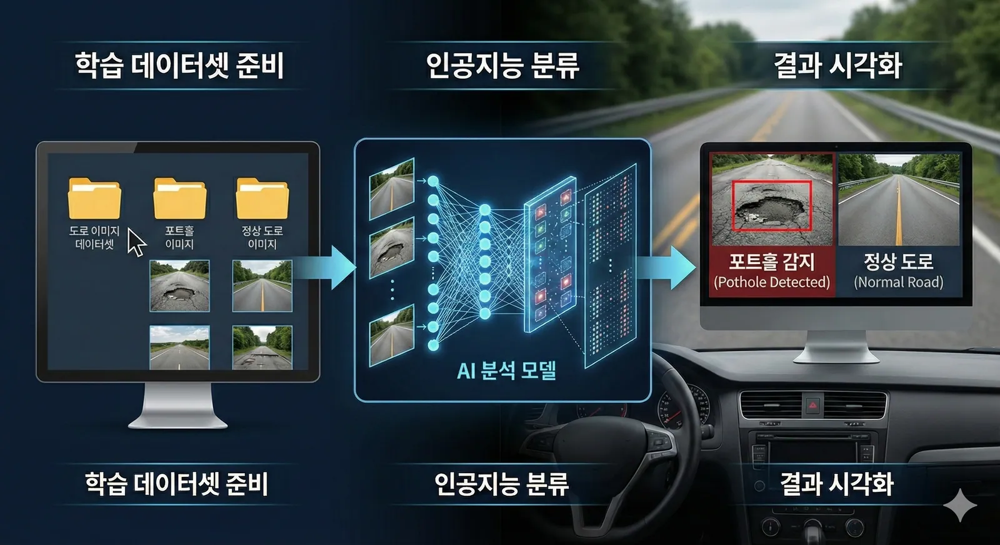
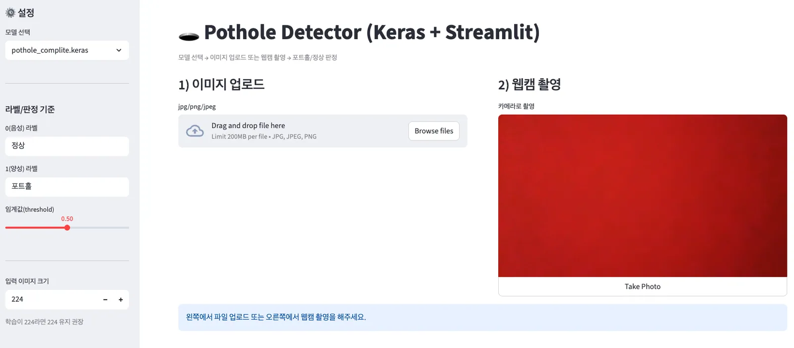

포트홀 4,025개와 정상 3,010개입니다.
Part 4 · Pothole Detection
포트홀 데이터셋
숫자와 알파벳에서 배운 CNN을 실제 도로 문제로 옮깁니다. 먼저 모델이 보게 될 이미지의 규모와 두 클래스의 분포부터 확인합니다.
Project · S145–146
도로 위의 포트홀을 찾아라
학습 데이터셋을 준비하고, CNN으로 포트홀과 정상 도로를 분류한 뒤, 판단 결과를 화면에 시각화합니다.

Dataset Scale · S146
7,035개, 약 8.6GB
전체 데이터는 포트홀 이미지와 정상 도로 이미지로 구성되며, 학습용 Train 데이터와 마지막 확인용 Test 데이터로 나뉩니다.
포트홀 3,218개와 정상 2,408개입니다.
포트홀 807개와 정상 602개를 합한 개수입니다.
모델이 학습할 실제 도로 이미지 데이터의 크기입니다.
* 원본 자료에는 1,407로 표기되어 있으나 세부 수치의 합과 전체 개수로 보아 1,409가 맞습니다. 807 + 602 = 1,409이고, 5,626 + 1,409 = 7,035로 원문의 전체 개수와 일치합니다. 1,407을 사용하면 합계가 7,033이 됩니다.
Class Balance
포트홀 이미지가 더 많다
전체와 Train·Test 분할 모두 포트홀 클래스가 정상 도로 클래스보다 많습니다. 모델을 학습할 때 이 차이를 무시하면 더 자주 본 클래스 쪽으로 판단이 기울 수 있습니다.
Next · class_weight
개수 차이를 학습에 반영한다
다음 포트홀 베이스라인에서는 클래스마다 학습에서 받는 중요도를 조정하는 class_weight로 데이터 불균형을 처리합니다.
적게 나온 반의 목소리도 같은 무게로
단순히 많이 등장한 클래스의 답만 따라가지 않도록, 클래스별 데이터 수를 보고 학습 시 가중치를 다르게 줍니다.
다음 페이지 p4-2 · 포트홀 베이스라인 코드
데이터 로드부터 증강, CNN 구조, 콜백, class_weight를 포함한 실제 학습 흐름으로 이어집니다.
Target · S147
이미지와 웹캠으로 도로를 판정한다
완성된 모델은 이미지를 업로드하거나 웹캠으로 촬영한 도로를 입력받아 정상과 포트홀을 판정합니다.

Quick Check
데이터 구성 확인
전체 데이터셋에서 더 많은 클래스는 무엇일까요?
답을 고르면 바로 해설이 나타납니다.
다음 베이스라인에서 class_weight를 사용하는 이유는 무엇일까요?
답을 고르면 바로 해설이 나타납니다.